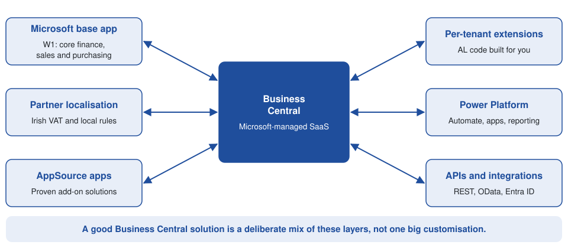
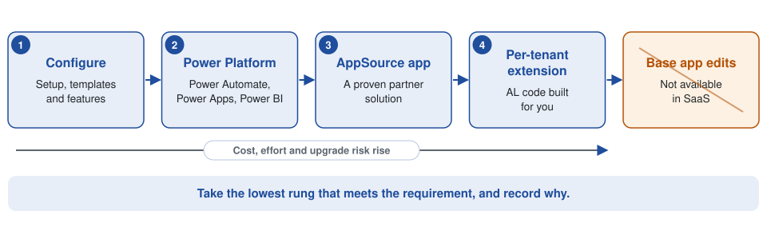
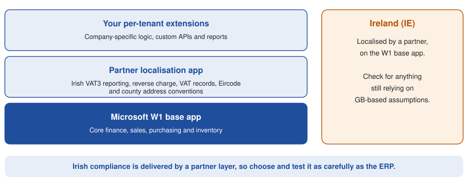
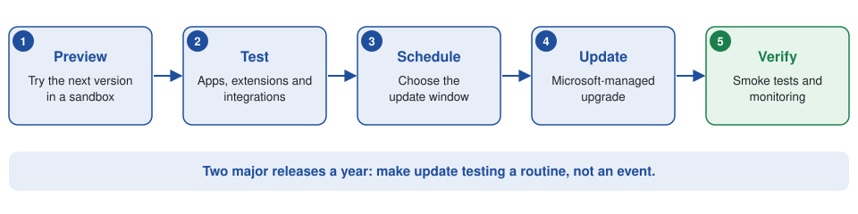

Dynamics 365 Business Central Solutions Architect in Ireland
If you are looking for a Dynamics 365 Business Central solutions architect in Ireland, you are probably choosing between ERP options, replacing NAV or an accounting package, or fixing a Business Central implementation that has become expensive to change. Business Central is quicker to implement than larger ERP platforms, which is exactly why architectural shortcuts are easy to take and costly to unwind. This guide covers what a Business Central solutions architect does, the design decisions that matter, and the issues that are specific to Irish organisations.
What does a Business Central solutions architect do?
A solutions architect decides how the whole solution is assembled and keeps it coherent as Business Central changes underneath it. In a SaaS product that changes twice a year, that second part is as important as the first. The architect is accountable for the fit between your processes, the base product, the Irish localisation, any apps and extensions, your integrations and your reporting.
| Area | What the architect decides | What goes wrong without it |
|---|---|---|
| Fit-gap and scope | What standard and AppSource cover, what needs an extension, what needs another tool | Custom code for problems configuration would have solved |
| Core design | Chart of accounts, dimensions, posting groups, approvals, permissions | Reporting that cannot answer management’s questions |
| Irish localisation | Which partner app delivers VAT and local requirements, and how it is tested | VAT and compliance problems found at the first return |
| Apps and extensions | AppSource apps versus per-tenant extensions, ownership and support | Unsupported add-ons that block updates |
| Integration and reporting | APIs, Power Automate, Jet Reports, Power BI, data platform | Fragile links and spreadsheet-driven reporting |
| Data migration | Scope, mapping, rehearsals, reconciliation | Balances that never reconcile |
| Environments and updates | Sandboxes, update testing, deployment schedule | Updates that break a live system |
Business Central or Finance and Operations?
Business Central suits organisations whose needs centre on finance, sales, purchasing and inventory in one or a few legal entities, and it is lighter and faster to implement. Dynamics 365 Finance and Operations is built for greater complexity: many legal entities with intercompany flows, demanding supply chain and warehouse requirements and high transaction volumes. Company size alone does not decide it.

If the answer is not obvious, that is the moment to get an independent view. The mirror-image guide covers the Finance and Operations solutions architect role in Ireland.
The anatomy of a Business Central solution
A well-architected Business Central solution is a deliberate mix of layers, not one large customisation. Each layer has a different owner, a different update path and a different cost of change.

Extensions: choose the lowest rung
In Business Central online you do not modify the base application. You change behaviour by configuration, by Power Platform, by installing AppSource apps, or by building a per-tenant extension in AL. Microsoft draws the operational line clearly: AppSource apps are installed from Microsoft Marketplace and then managed in the admin center, while per-tenant extensions are uploaded as an app package with a chosen deployment schedule and sync mode (Microsoft Learn).

The decision rules I use:
- Configure before you code. Many requests are answered by setup, templates or features that already exist.
- Buy before you build, with caution. An AppSource app is often cheaper than custom code, but only if the publisher is stable, supports your Business Central version and will keep up with each release. Marketplace validation covers specific versions, so an app update may not be offered until your environment is on a validated version.
- Build small and own it. A per-tenant extension should have a clear owner, source control and automated tests, and should do one thing well.
- Understand app removal. Uninstalling an app can delete its data, which is then recoverable only through point-in-time restore within 28 days unless you export first. Test uninstalls in a sandbox.
Irish localisation: a partner layer you have to choose carefully
This is the most Ireland-specific architectural decision. In Microsoft’s country and region availability list, Ireland is localised by a partner, on the international W1 base app, rather than with a Microsoft-delivered country application (Microsoft Learn). Irish requirements such as VAT3 reporting, VAT records, reverse-charge treatment and Eircode and county conventions are therefore delivered through partner apps from Microsoft Marketplace. Companial’s Localization for Ireland is one example (Companial).

Two practical points follow. First, treat the localisation app like a core component: evaluate it, test your VAT scenarios against it in a sandbox and agree who supports it. Second, check for dependencies on GB assumptions. Companial notes that Microsoft is moving the UK localisation to a W1-based extension model from Business Central 2025 release wave 2 (version 27) and suggests Irish environments that rely on GB-based assumptions or customisations should be reviewed, with April 2027 as a practical planning horizon. That is one vendor’s analysis, so confirm the position for your own environment with your partner.
E-invoicing: design for 2028 now
Ireland has announced phased mandatory B2B e-invoicing and real-time reporting. According to the timeline published by Matheson in October 2025, large corporates fall in scope for domestic B2B in November 2028, all VAT-registered businesses in November 2029 and intra-EU B2B on 1 July 2030, with every VAT-registered business needing to be able to receive e-invoices before its own date (Matheson).

A Business Central system implemented now will still be running then. Ask your partner now how structured e-invoice output and real-time reporting will be delivered, whether through the localisation app or a separate e-invoicing solution, and keep invoicing, tax and integration logic modular so it can be added without reworking the solution. Dates and formats may still change, so confirm with Revenue and your tax adviser.
Integration and reporting architecture
Business Central supports REST APIs, OData and SOAP web services, and Microsoft identifies the REST API stack as the preferred approach for integrations with external systems, with custom APIs built from AL API pages and API queries when the standard APIs do not expose what you need. The architectural questions are more important than the technology: who owns each piece of data, what happens when a transaction is rejected, what happens if a message is sent twice, how failures are monitored, and how you prove both systems agree. I cover those in Business Central Integration: What Are the Options? and, for CRM specifically, Connecting Dynamics 365 CRM and Business Central.
For reporting, decide early which tool does which job. Jet Reports is strong for Excel-based financial and operational reporting that Finance can refresh, Power BI for interactive dashboards, and a data platform for enterprise-wide models. See How to Create a Custom Jet Report in Business Central for the Excel side.
Data migration
Whether you are leaving NAV, Sage, an accounting package or a legacy ERP, migration is an architecture workstream: scope decided by business requirement, a mapping document Finance agrees, cleansing before the final run, several rehearsals, and reconciliation evidence at cutover. Start with Business Central Data Migration: The Complete Guide. For NAV specifically, NAV to Business Central Data Migration: A Practical Guide covers customisations, dimensions, opening balances and historical data, and Integra Finance to Business Central shows a worked approach.
Environments and release management
Business Central is updated on a regular cadence of major releases, so update testing needs to be routine. Microsoft’s documentation notes that app updates are applied during major version updates, that an Apps Update Cadence setting controls whether apps also update with minor updates (the default is major updates only, and the setting does not affect per-tenant extensions), and that preview versions of apps can be installed in sandbox environments only.

A sound release approach includes a sandbox that mirrors production, a regression test pack covering your key processes, integrations and extensions, a named owner for each app, and an agreed window for production updates. The same documentation notes that the in-environment Extension Management page for per-tenant extensions is slated for removal in 2027 release wave 1, so manage extensions through the admin center and check current guidance before standardising your process.
Common Business Central architecture mistakes
- Recreating every NAV customisation instead of asking whether the business still needs it.
- Letting per-tenant extensions multiply with no owner, source control or tests.
- Installing AppSource apps without checking support, version compatibility and exit cost.
- Choosing the Irish localisation app on price rather than tested VAT scenarios.
- Designing dimensions around today’s org chart rather than management reporting needs.
- Building integrations with no monitoring, retry or reconciliation.
- Treating each major update as a surprise instead of a scheduled test.
- Planning for today’s invoicing and ignoring the e-invoicing timeline.
What a solutions architect should deliver
- A solution design covering processes, chart of accounts, dimensions, permissions and approvals.
- A fit-gap register with a decision and an owner for each gap.
- An app and extension register with owners, versions, support arrangements and exit plans.
- An Irish compliance approach covering VAT, localisation testing and e-invoicing readiness.
- An integration catalogue and a reporting architecture.
- A migration strategy with rehearsals and reconciliation criteria.
- An environment and update-testing strategy, and go-live readiness criteria.
When to bring in a solutions architect
The best-value moments are before you select a partner or sign a statement of work, at design sign-off, and when an implementation is not delivering what was promised. An independent review is cheap compared with the cost of unpicking a poor design after go-live. Typical engagements are a fixed-scope review, a part-time design authority alongside your implementation partner, or an interim lead architect for a phase of the project.
Frequently asked questions
What does a Business Central solutions architect do?
They design how the whole solution fits together: fit-gap, core financial design, Irish localisation, apps and extensions, integrations, reporting, data migration, and environment and update management, and they stay accountable for how it behaves after go-live.
Is Business Central localised for Ireland?
Microsoft lists Ireland as localised by a partner, on the W1 base app. Irish requirements such as VAT reporting are delivered through partner apps from Microsoft Marketplace, so the choice and testing of that app is a key architectural decision.
Can Business Central be customised?
Yes, through configuration, Power Platform, AppSource apps and per-tenant extensions written in AL. In Business Central online you do not change the base application itself.
How often is Business Central updated?
Microsoft ships major updates on a regular cadence, so plan a repeatable routine for previewing, testing and scheduling updates rather than treating each one as an event.
Business Central or Finance and Operations?
It depends on process complexity, not company size. See the comparison above and the Finance and Operations solutions architect guide.
Can you work remotely with organisations across Ireland?
Yes. I work remotely with organisations across Ireland.
Work with a Dynamics 365 Business Central solutions architect in Ireland
I provide independent solutions architecture for Dynamics 365 Business Central, drawing on more than 30 years’ experience across ERP, software engineering, data and enterprise systems, including Business Central, Dynamics CRM, APIs, Power Platform, Azure, SQL, ETL and reporting. Typical engagements:
- Solution architecture and design authority for new implementations
- Platform selection and partner proposal reviews
- Extension and app strategy, including NAV customisation clean-up
- Integration architecture with CRM, ecommerce, banks and data platforms
- Data migration strategy and reconciliation from NAV and other legacy systems
- Reporting architecture with Jet Reports, Power BI and Azure SQL
- Health checks and go-live readiness reviews
If you are selecting a partner, reviewing a design or trying to fix an implementation, tell me where you are and I will tell you where I can help. Contact me at declan@feelyconsultants.com or on LinkedIn.
Feely Software Consultants · Ireland | Remote Business Central Consulting